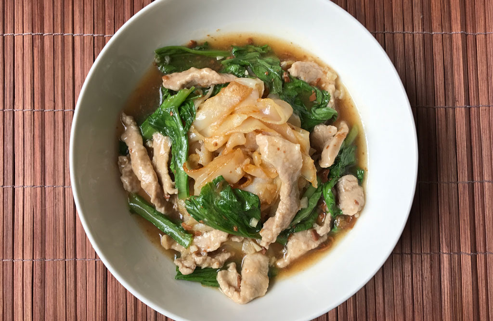

homepage
Lad Na!

Description
Lad Na, or Lard Na (how I originally knew it as), was a staple dinner of my college years. My favorite (the only) Thai restaurant near campus made a mean and spicy Lad Na, a Lao-Chinese noodle dish in a gravy-like broth, often topped with chicken, broccoli, and other vegetables.
Ingredients
This is a big recipe, so ingredients will be split into three parts:
- Marinade
- pork skirt steak (sliced thinly)
- tapioca flour
- Thai white soy sauce
- oyster sauce
- sesame oil
- white pepper powder
- egg white
- Noodles
- water
- wide rice noodles
- dark soy sauce
- Broth
- oil
- garlic cloves (minced)
- yellow bean sauce
- chicken broth
- tapioca flour
- water
- green mustard leaves
- soy sauce
- white pepper
- Thai seasoning sauce
- (or mix soy sauce, sugar, and vegetable stock granules)
- sugar
- vinegar
- Thai chili sauce
Instructions
To Prep
- In a bowl, mix all marinade ingredients together. Add pork and mix well to evenly coat the meat in marinade. Set aside for an hour or even overnight.
To Cook
- Prepare rice noodles as per instructions on the packaging.
- Heat a wok or pan and add cooking oil.
- Over medium heat, add noodles, water and sauce into the wok and let it cook until noodles soften. When noodles start to brown and clump together dish out and set aside on a serving plate.
- Heat wok again and add 1 tbsp oil.
- Add garlic and saute until fragrant. Then add the yellow bean paste and continue to saute for another 2-3mins.
- Add pork or chicken broth and bring to a boil. Add pork slices to the boiling broth bit by bit so they won’t stick together. Continue cooking until pork is not pink.
- In a bowl, mix water and tapioca flour and stir it into the broth, little by little. Add more tapioca flour if you prefer your lard na to be gooier and less soupy. Add more broth If you like it more brothy.
- Add in chinese broccoli, other sauces and sugar to taste. Continue cooking for a few minutes until chinese broccoli is tender but still crisp.
- Lastly, dish out and serve with vinegar or Thai chilli sauce on the side to have your lard na in Sukhothai style.
Recipe stolen shamelessly from
Asian Inspirations.
top
homepage